Jenn‑Air Connected Appliances
App Redesign
Creating a connected kitchen appliances app experience to honor the brand principles.
Jenn‑Air is a premium kitchen appliances brand owned by the Whirlpool Corporation, known for sophisticated design, innovative technology and exceptional performance. The challenge was to bring that same experience to the app itself — tying in the brand's vision and principles to honor everything it stands for.
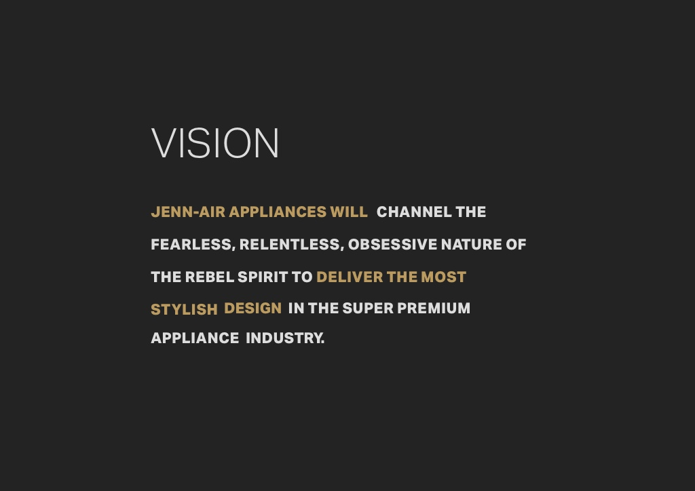
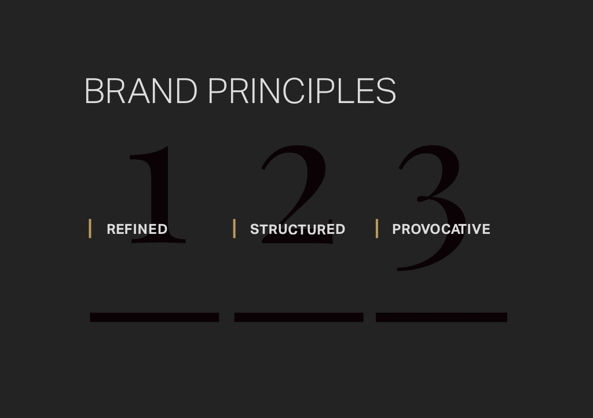
Jenn‑Air 2.0 — a redesign for connected appliances
The Jenn‑Air app was built for connectivity — letting users operate their kitchen appliances remotely. With cooking as the primary focus, the app lets people set cook or bake cycles on free-standing or wall ovens, monitor time and status, and get notified when a cycle ends. It also suggests the ideal cook time and temperature for whatever's being made, which is exactly what Jenn‑Air stands for: perfection. The brand's connected line spans refrigerators, cooktops and microwaves.
Jenn‑Air is a premium, sophisticated brand — the app previously on the market (1.0) felt completely disconnected from that identity. Ratings had fallen to 1.5–2 stars across Apple and Android, making it clear the business needed a real plan. That's how Jenn‑Air 2.0 began.
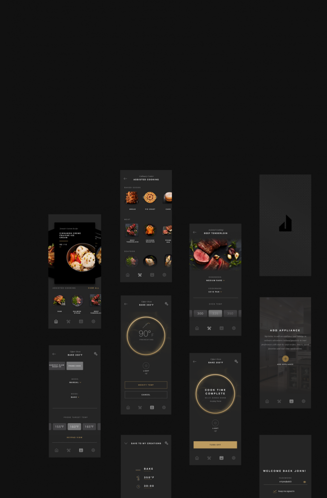
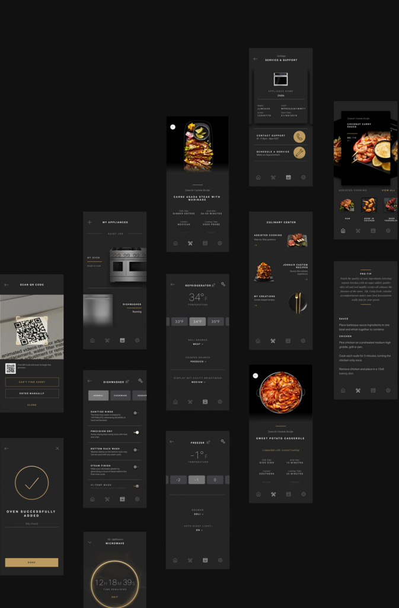
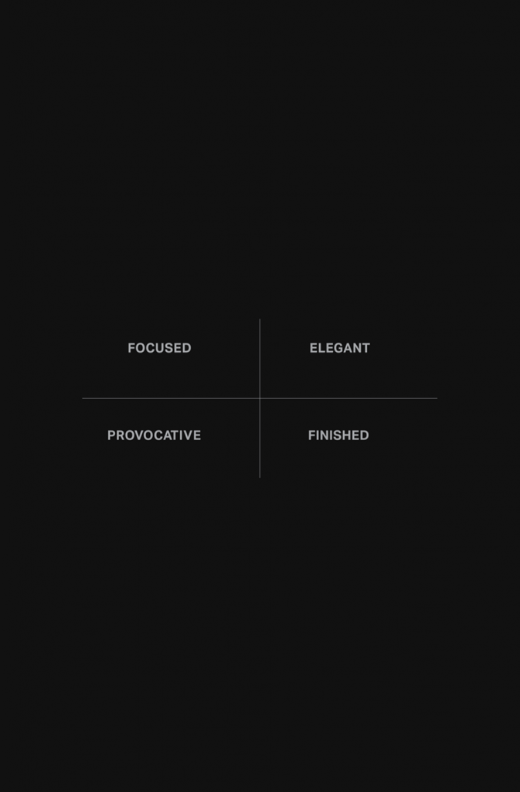
Goals for the redesign
Aesthetic overhaul — tie brand principles to UI design for an elevated, premium experience.
A non-logged-in view — app 1.0 offered nothing without a connected appliance. As a premium lifestyle brand, Jenn‑Air needed more curated recipes and articles for every visitor.
Move the app rating from 1.5–2.0 up to 4.0–5.0.
Smart UI techniques that delight the user and elevate the overall brand and app experience.
Strategic differentiation — Jenn‑Air sits within the Whirlpool family alongside KitchenAid, Maytag and Whirlpool. Each brand needed its own clear identity.
An app that feels like an extension of the appliance — design details inspired by the hardware itself.
Style and sophistication — build a lifestyle around the brand, symbolic of its premium self.
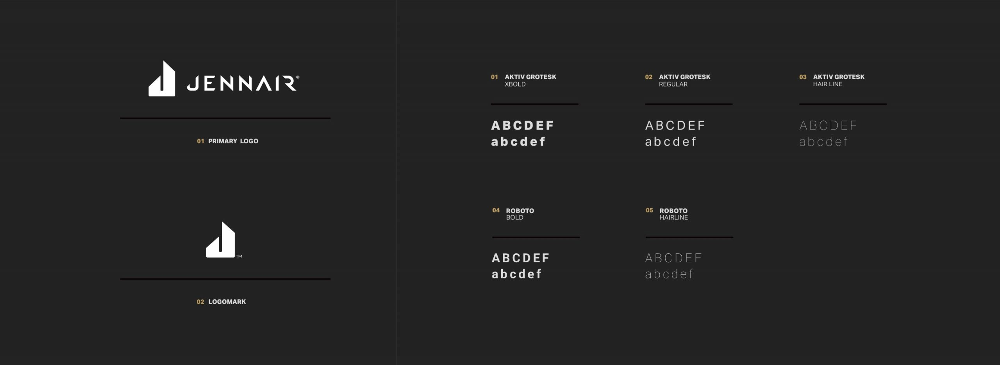
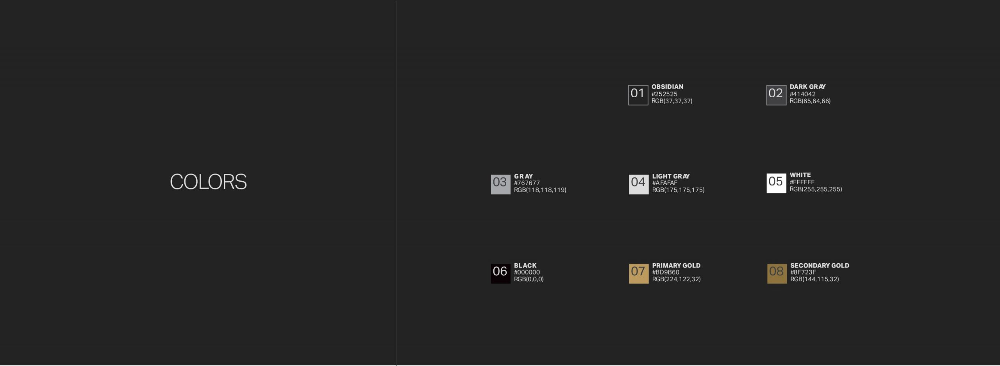
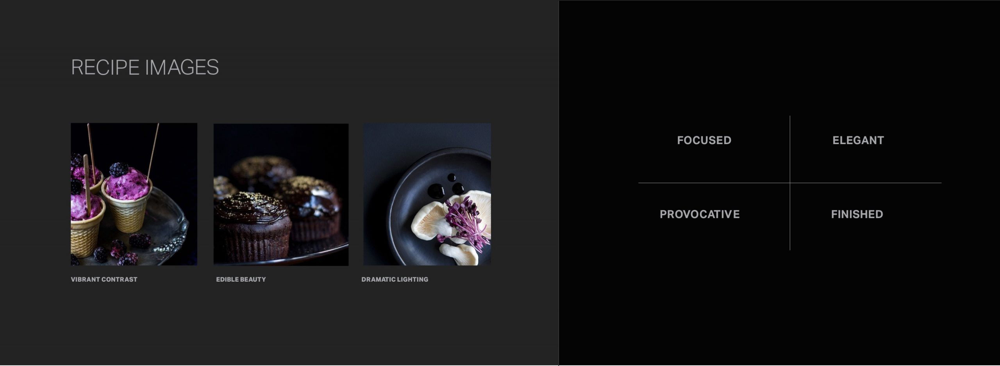
App 1.0, that once was
Jenn‑Air has strong design principles — refined, structured, provocative — and the app that was on the market wasn't the best representation of what the brand stands for. The design lacked character, which showed clearly in the ratings.
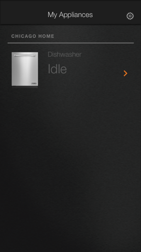
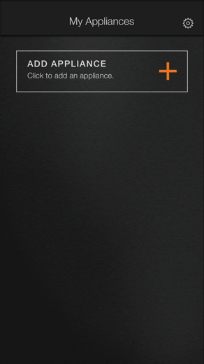
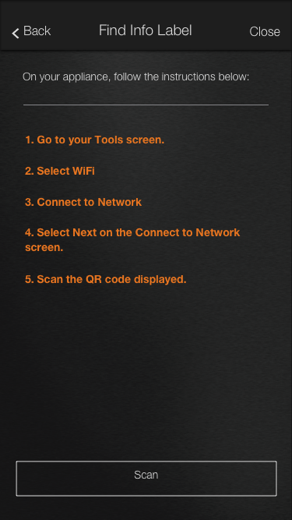
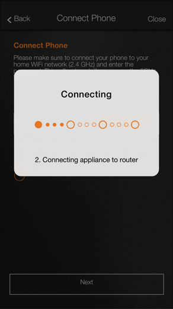
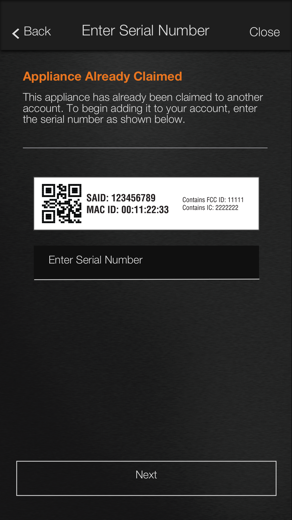
Establishing the style for Jenn‑Air 2.0
Jenn‑Air has been around for decades, and black is the color people associate most with the brand — that became the foundation for a new palette symbolic of its premium identity and sophistication.
Photography is the life of the brand, so a lot of thought went into getting it right. With KitchenAid also under the Whirlpool umbrella and occupying the same kitchen space, clear differentiation mattered. KitchenAid represents inspiration and the maker's spirit — showing process, ingredients, technique. Jenn‑Air, by contrast, is about the finished product: perfection, the final plated dish, food that looks like art. Jenn‑Air imagery never shows process or anything visually imperfect.
Style inspired by its own appliances
The redesign ties the physical and digital together, taking design cues from the appliances themselves — from product photography's visual language down to small hardware details — to set the tone for the app.
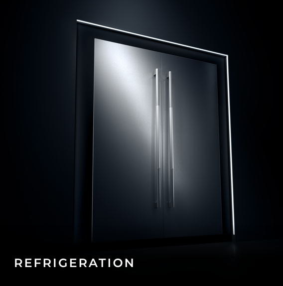
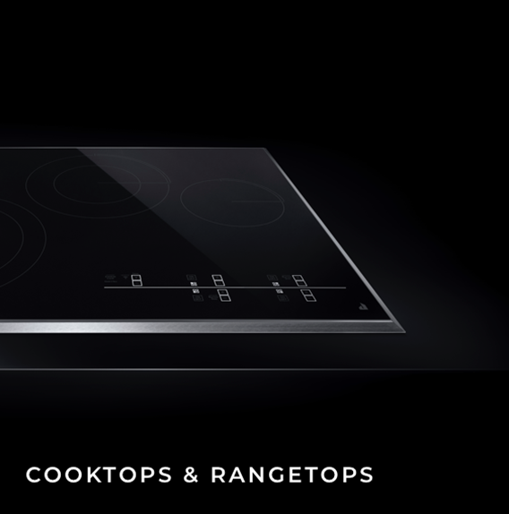
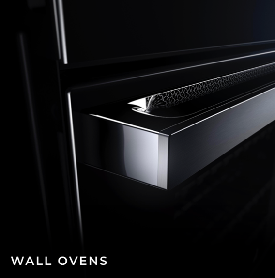
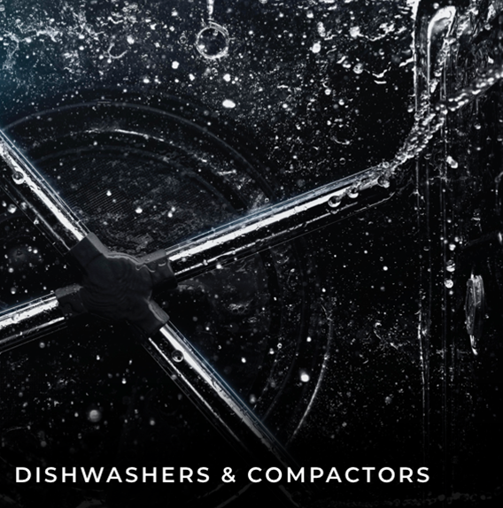
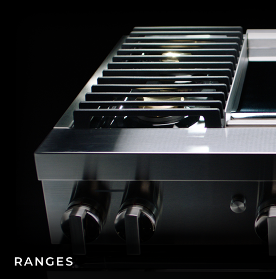
Jenn‑Air 2.0 — the app
At a high level, the app splits into four parts, forming the lower navigation bar: Home, Culinary Center (assistance & customization), Dashboard (where connected appliances live), and Settings.
Home
The home screen takes a dynamic, Netflix-like approach that learns the user's habits over time and surfaces the most relevant information. The main slider features Jenn‑Air custom recipes, curated by top chefs and tested repeatedly on Jenn‑Air appliances to achieve perfection — visible to every user, whether or not they own an appliance yet.
Below that sits Assisted Cooking, which helps set the ideal settings for whatever's being made. As the app learns which settings and cycles a user relies on most, those surface for quick access — making the home screen feel genuinely personal.
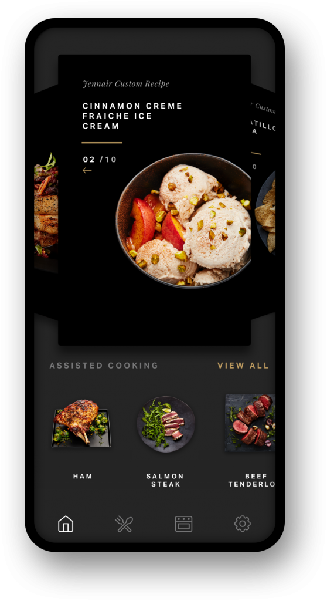
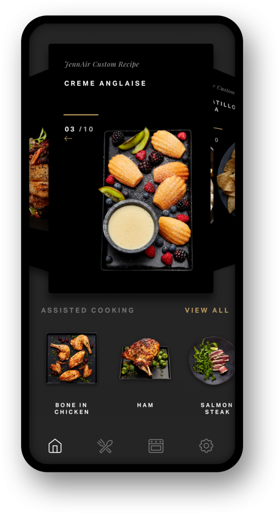
Culinary Center
Culinary Center splits into three parts: Assisted Cooking, Jenn‑Air Custom Recipes, and My Creations. Assisted Cooking suggests the right temperature and settings for whatever's being made (with the option to override), Custom Recipes guide users step-by-step through restaurant-style cooking, and My Creations lets users save their favorite results — settings included — so they can recreate them exactly next time.
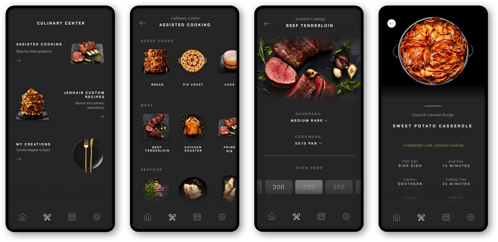
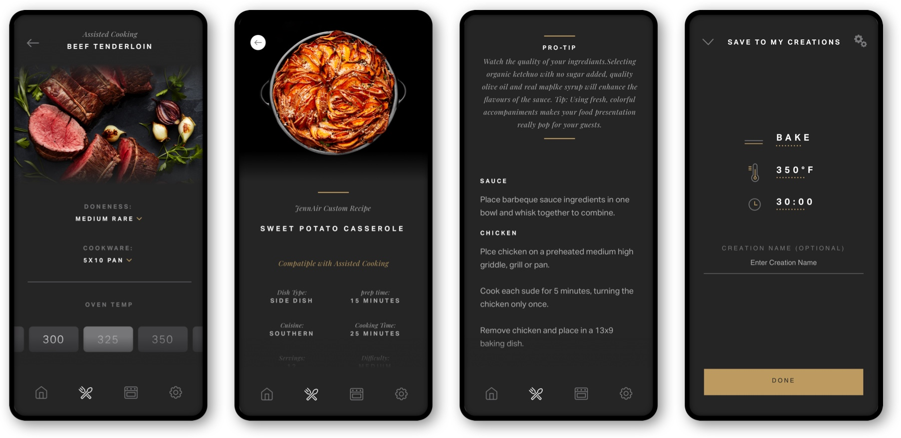
Dashboard
The Dashboard shows every connected appliance and its status, grouped by location for users with appliances in multiple places. Primary users can add family members and secondary users; only the primary account can add or remove an appliance. Adding one is simple — tap the add icon, scan the QR code on the appliance, and give it a custom name.
From here, users can check every appliance's status at a glance, operate them remotely, and set cycles. The app pushes a notification the moment a cycle finishes — for example, when a bake cycle ends and the food is ready.
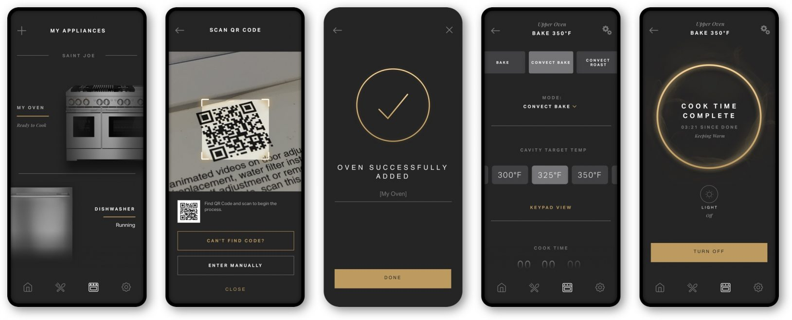
Style & sophistication
True to what the brand stands for, this redesign aimed for the most stylish app experience in the category. A well-defined style guide and clear rules for every visual component helped the team hit that mark consistently — simple, stylish, sleek, edgy. Building content from scratch meant full control over every element of the aesthetic; high-quality imagery and food styling did half the work.
App Store assets
App Store assets focus on surfacing the most important things about the app at a glance — an opportunity to build awareness of new features and capabilities while making a strong, on-brand first impression for new and returning users alike.
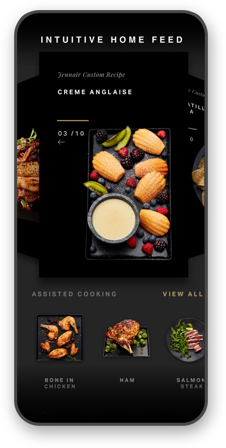
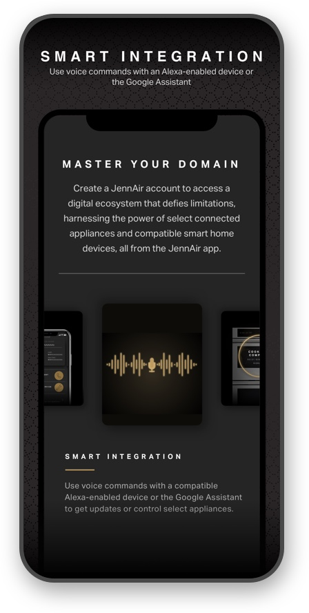
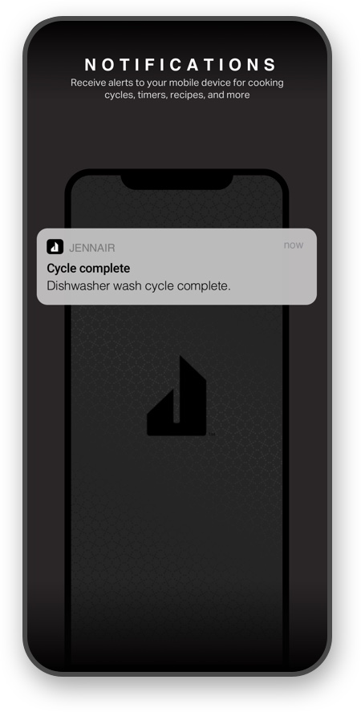
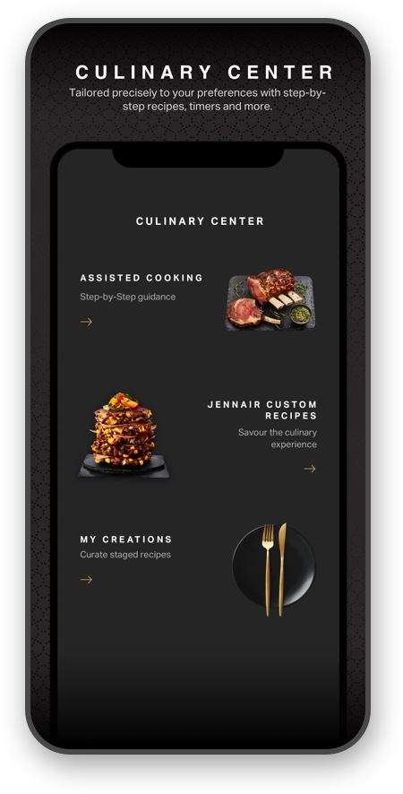
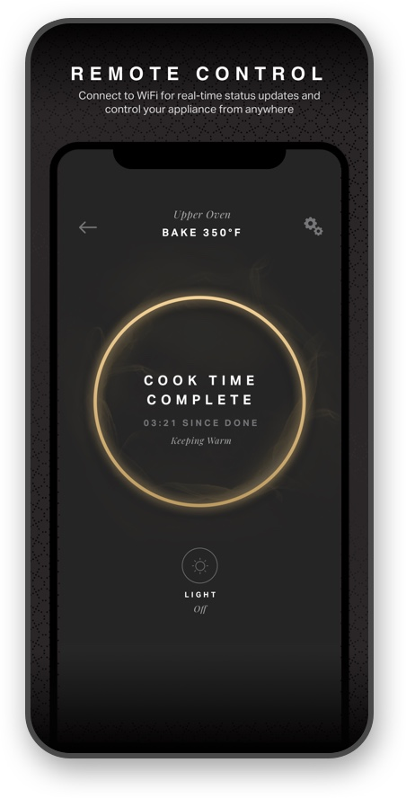
Brand expansion
This project was also an opportunity for brand expansion through design. Custom marketing emails used the new visual language to raise awareness of new features and capabilities — targeted slightly differently for new versus existing customers.
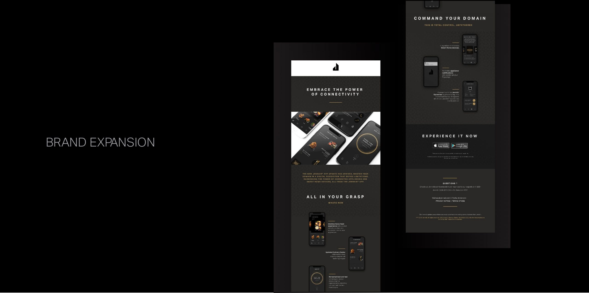
Motion design & navigation
A glimpse of the overall motion design and navigation throughout the app.


Conclusion / learnings
One of the biggest lessons from this project was the value of a well-developed, detailed style guide — it made producing dozens of screens far easier. Jenn‑Air called for a huge amount of content creation, and having clear direction on what that content was and how to create it became the top priority.
The project's length was its own lesson: the team's focus on shipping a fully-developed, best version of the app meant it ran long — over two years, with people moving in and out along the way. It taught the wider organization the value of setting more achievable goals, a lesson clearly applied on projects that followed. Working closely with a remote development team day-to-day and constantly pushing each other on UI quality was a huge part of the growth this project brought — and I'm grateful to have seen it through to a successful launch.